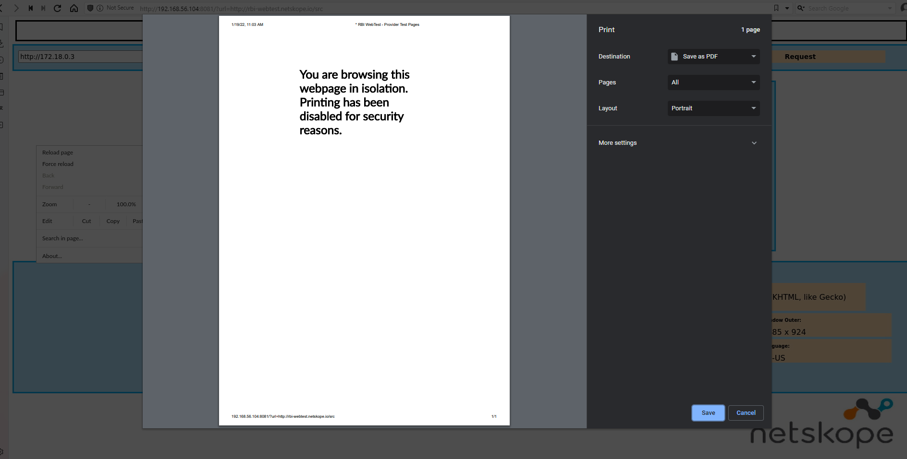
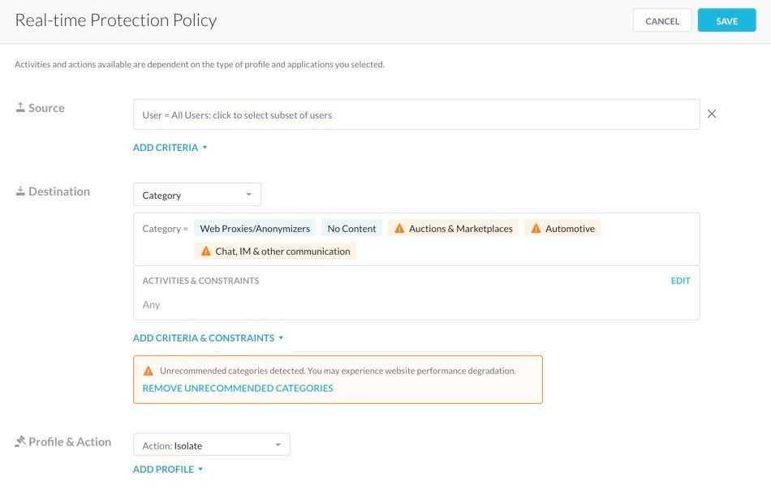
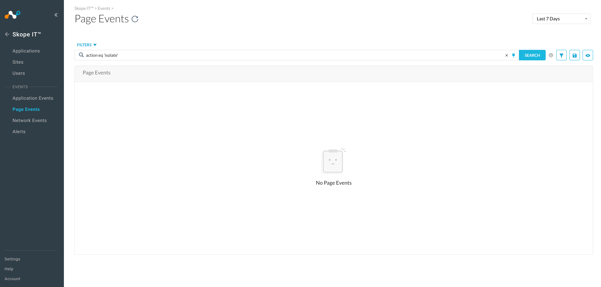
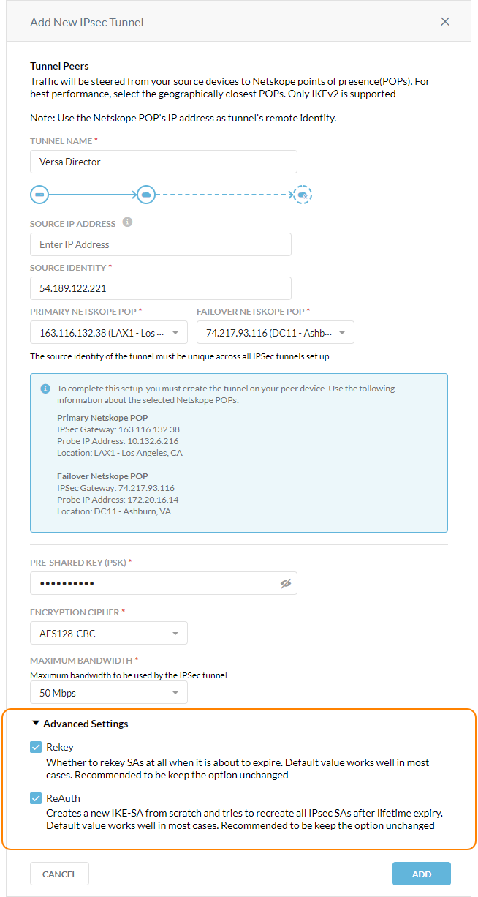
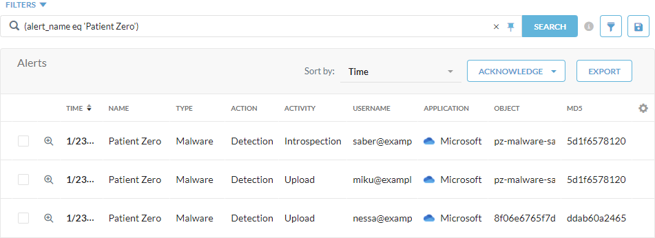
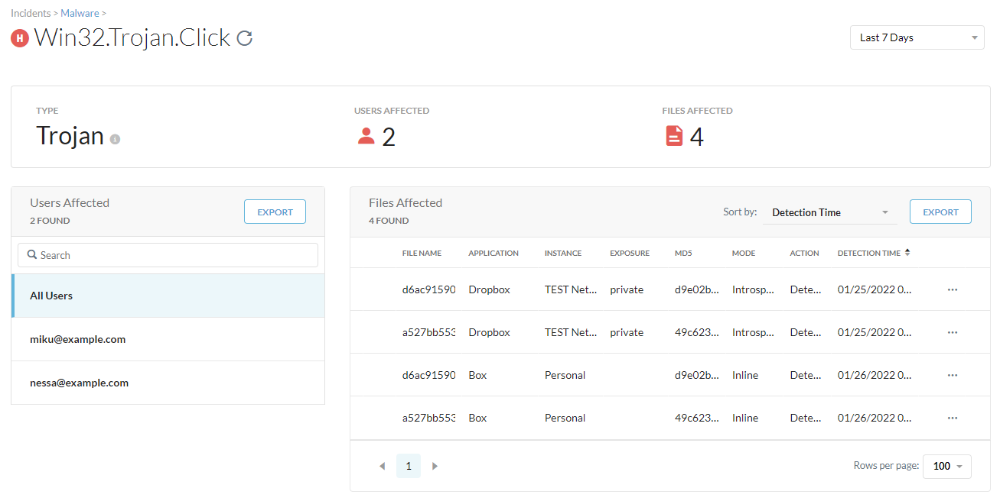

New Features and Enhancements In Release 92.0.0
Here is the list of the new features and enhancements.
Insider Threats Dashboard
Uncover insights into risky user behavior with this new addition to the Netskope Library.
You can schedule a dashboard directly from the Netskope shared folder and automatically get updates that Netskope makes to improve that dashboard. If you do not want automatic updates, then copy the dashboard into your group or personal folders and schedule from there.
Ability To Filter For Isolated Events
The new Action data field in the page events data collection allows you to report isolated events generated from RBI.
Access Restriction To Internal Users
API Data Protection now can restrict access to internal users in the policy wizard for Microsoft Office 365 OneDrive and SharePoint applications. This new feature, when enabled, restricts file-sharing access to internal users only. The Internal Users option is available as part of the API Data Protection policy wizard under Action > Restrict Access > Restrict Access Level.
Note
This is a Limited Availability feature. Contact Netskope Support for more information.
Support For Tombstone Files
Netskope has added support for tombstone files uploaded in case of malware detection for applications other than Microsoft Office 365 OneDrive and SharePoint.
Granular Permissions For Slack App
Slack has introduced granular permissions. To leverage the new permissions:
Log in to your Netskope tenant.
Navigate to Settings > API-enabled Protection > SaaS > Slack Teams.
Select the existing instance and re-grant the app.
Follow the same steps for the Slack Enterprise app.
Note
For Slack Enterprise, re-grant the Bot too.
Support ServiceNow GovCommunityCloud
Netskope now supports API Data Protection for ServiceNow instances running within the GovCommunityCloud (GCC) environment. Customers can enforce data protection policies on attachments and fields for incident and problem record types within instances hosted in these environments.
SharePoint App Site-Level Sharing Permission Change Notification
Netskope has introduced a change in the way Microsoft Office 365 SharePoint Sites app site-level sharing permissions are computed. Exposure calculation of a file (during the initial listing and ongoing flow) will now use sharing information from the site to calculate overall exposure in addition to file level exposure.
To learn more: SharePoint App Site-level Sharing Permission Change Notification.
Note
This is a Limited Availability feature. Contact Netskope Support for more information.
Lower Permission Request For Microsoft Office 365 Outlook App
API Data Protection has lowered the permissions required for the Azure Web App for Microsoft Office 365 Outlook. Netskope has removed the Use Exchange Web Services with full access to all mailbox permission from the Azure web app for Outlook.
LucidChart Application Revamp
In this release, Netskope adds support for Unshare activity for the Lucidchart application, where you can unshare the document. You can configure policies in real-time based on Unshare activities.
200+ New Inline App Connectors For AWS
With this release, Netskope extends support for more than 200 new application connectors for AWS with coverage across browser and CLI/API traffic.
Change Create Event To Copy Event In Citrix ShareFile
Earlier, Create activity was detected while copying a file from a folder to another folder in the ShareFile application. From this release onwards, this navigation is detected as Copy which is a more accurate name for the action performed. You can configure policies in real-time based on Copy activities.
Rename Activity In Sumo Logic
In this release, Netskope adds a Rename activity that enables you to configure policies in real-time.
DLP Support For Send Activity In ServiceNow Application
Netskope now extends DLP support for Send email activities in ServiceNow Application. You can now apply DLP policies for the content followed by DLP inspection.
Post Activity For Survey Response In ServiceNow
Earlier, Create/Edit activity was detected while submitting a survey response in ServiceNow. From this release onwards, this navigation is detected as Post which is a more accurate name for the action performed. You can configure policies in real-time based on Post activities.
Create Activity For Google Docs Created From Minutes Of Meeting
Google provides a new feature to create Minutes of Meeting in the Google Calendar invite. Netskope adds coverage for the Google Doc created when you generate Minutes of Meeting using the Create activity.
Dedicated Inline Connector Support For Whatsapp
With this release, Netskope extends new app connector support for the Whatsapp application as per the request to detect Upload and Download activities. This helps you to configure policies in real-time.
New Activities In Google Cloud Storage
In this release, Netskope adds Move and Copy activity in the Google Cloud Storage application.
User Interface (UI) changes For EOL Apps In SAML reverse proxy
End of Life support UI changes for SpringCM, Jive, and Intralinks application with Reverse proxy.
Support For Additional File Types
This release includes support for several additional file types accessible through the DLP file filter and some of these involves:
Microsoft Visual Studio and Visual SourceSafe Source Code Control files, as well as Microsoft Pocket Word and Pocket Excel files.
Many Apple iOS image and Mac OS files.
PEA (Pack, Encrypt, Authenticate), izip compressed, and UltraCompressor II archive files.
Netskope Adapters
The Netskope Adapter (NS Adapter) has been tested to ensure compatibility with the current cloud platform. Its version number has been updated to confirm this compatibility. No other changes have been made to the NS Adapter in this release.
Functionality To Manage Single Sign-On (SSO) Users
In addition to the local tenant admin user accounts, the Netskope admins page now displays SSO user accounts after admin users successfully authenticate with IDPs. It allows tenant admin to manage the SSO user accounts in the management console.
Additional Permissions For AWS Instance Setup CFT
Netskope Cloud Security Assessment (CSA) uses cross-account IAM Role (Netskope_Role) to access customer AWS environment. The inline policy netskope-csa attached to the Netskope_role is updated to add support for AWS WAF and SES. The new Inline policy after Release91.1.0 is as follows :
{
"Version": "2012-10-17",
"Statement": [
{
"Action": [
"s3:ListBucket",
"ses:ListIdentityPolicies",
"s3:GetBucketAcl",
"s3:GetBucketLocation",
"s3:ListAllMyBuckets",
"dynamodb:ListTagsOfResource",
"sqs:ListDeadLetterSourceQueues",
"sqs:GetQueueUrl",
"sqs:GetQueueAttributes",
"lambda:Get*",
"lambda:List*",
"cloudwatch:GetMetricStatistics",
"eks:ListFargateProfiles",
"ec2:GetEbsEncryptionByDefault",
"codebuild:BatchGetProjects",
"codebuild:ListSourceCredentials",
"wafv2:GetLoggingConfiguration",
"ses:GetAccount"
],
"Resource": [
"*"
],
"Effect": "Allow"
},
{
"Action": [
"s3:GetObject",
"s3:GetObjectVersion"
],
"Resource": [
"arn:aws:s3:::elasticbeanstalk-*"
],
"Effect": "Allow"
}
]
} Feature Flag To Select Specific AWS Regions
In this release, Netskope introduces a tenant-level feature flag to restrict Netskope CSPM to only scan selected AWS regions.
Note
To enable this feature flag, contact Netskope Support.
AWS Foundational Security Best Practices Standard In Cloud Security Posture Management (CSPM)
In this release, Netskope CSPM adds all predefined checks present under the Foundational Security Best Practices standard of AWS Config. You can find the predefined rules under Netskope AWS Best Practices Profile. Netskope extends support for the following 15 new AWS services:
DAX (DynamoDB Accelerator)
ElasticBeanstalk
AutoScalingGroup
ACM
APIGateway
CodeBuild
SourceCredential
DMSReplicationInstance
ClassicLoadBalancer ECSTaskDefinition
RDSEventSubscription
Endpoint
WebACL
SageMakerNoteBookInstance
Secret
Granular Policy Control For Microsoft Azure (Storage Scan)
You can now set up granular data loss prevention (DLP) policies using the UI to focus scans on critical parts of the cloud infrastructure. Granular policy control includes container-level attributes like bucket name, tags, region, and access. You can also build policies using object-level attributes like name, key, content type, extension, and so on.
Note
This is currently behind a feature flag. To enable this feature flag, contact Netskope Support.
Support For Origin Header In HTTP Header Based Policy
The list of supported Request Headers for HTTP Header Policies now includes Origin (used for controlling CORS requests). For more information: https://developer.mozilla.org/en-US/docs/Web/HTTP/Headers/Origin.
Policy For Unknown Users
For users that are unknown or not authenticated due to any reason, admins can create a policy specifically for unknown users in real-time policies and extend the threat and DLP protection to those unknown users.
Note
This is a Limited Availability feature. Contact Netskope Support for more information.
Sort And Pagination Support
The UI has improvements for easier navigation of Private Applications and Publisher configuration.
Ability To Terminate An Active Session
NPA Browser Access now provides an admin with the ability to terminate a user’s active session.
Authentication Support For Azure AD
This improvement addresses an issue that prevented Browser Access users from successfully authenticating against Azure AD in certain scenarios.
Print Function Behavior
Enhanced the behavior of the Print user action control in isolated pages. You cannot use the local browser Print function to print isolated pages content. Print preview will show a blank page and a warning message stating that printing has been disabled since printing is blocked in the global configuration for all isolated pages. Before this enhancement, you could use your local browser print function to print a screenshot of the isolated page rendered content, which leads to confusion.
|  |
Update Unrecommended Categories
Enhanced the admin UI for the RBI policy creation template (Policies > Real-Time Protection > New Policy > RBI). Destination unrecommended categories selected in an isolation policy will be identified with an orange box and warning icon. This enhancement can help you identify unrecommended categories when you add them to the isolation policy.
Before this enhancement, while creating RBI policies, you received a warning message if you add unrecommended destination categories. But these categories were not identified explicitly. As a workaround, remove unrecommended categories action was used to remove them from the policy.
|  |
New Report Templates In Reports Template Library
In this release, two new template library Reports and 30 new report widgets tied to them are available:
Cloud Risk Assessment - Visibility: This report provides visibility in cloud and web usage in your environment.
Cloud Risk Assessment - Monitoring & Control: This report provides a summarization of alerts generated by any active controls in places, such as DLP alerts, policy blocks, and behavior analytics policy alerts.
Ability To Filter Isolation Events In Skope IT
Enhanced filtering of Page Events in Skope IT allows customers to filter events using the isolate action with a simple query (action eq 'isolate'). Before this change, it was not possible to filter Page Events by action.
This enhancement allows you to identify the pages sent to Netskope RBI for web isolation by typing the filter: action eq 'isolate'. This isolate filter is not present in the + Add Filter menu.
|  |
Advanced Settings Added For IPSec Tunnels
When adding IPSec tunnels, you now can select or deselect rekey and reauthentication in the Advanced Settings. These options are enabled by default, and Netskope recommends using the default settings. Netskope provided the advanced settings to bring up IPSec tunnel with Versa devices.
|  |
To learn more: IPSec.
Compromised Credentials Improvements
The Compromised Credentials pages are enhanced with the following improvements:
The Dashboard widget and Incidents page now displays the total tenant-specific compromised credentials (previously displayed credentials for the entire domain) for both domain and non-domain users.
Renamed the data source filter to access method and additional methods are available to sort the access method for the detected users
Added a new field to show the matching username from the compromised credential intel feed. For example, when the matched user = user, a credential from the configured domain(s) is compromised.
The Compromised credentials detail now displays an elaborated breach description about the breach if available.
Additional Filters
This update adds additional filters to the Client Traffic Exploit Prevention (CTEP) signature overrides. Now you can use signature references example CVE and CVSS scores to filter signatures.
To learn more: Creating a Signature Override.
CTEP Override Link Pre-Populates Signature ID Field
This update enhances the signature override option on the Alert Details page for CTEP. Now the signature id is pre-populated when you select signature override action.
Improved CTEP Signature Search Filters
In this release, Netskope enhances the signature overrides setting. You can now scroll through the entire list of CTEP signatures using a scroll bar.
CrowdStrike API Integration
CrowdStrike integration API changed to a newer API offering called IOC Manager that provides several new features including the ability to set the severity of generated detections and block hashes. Also, allows you to identify the IOCs sourced from Netskope (seen as Netskope_CSPlugin_v3) on the CrowdStrike Falcon UI. The change does not modify the configuration steps in Netskope UI and the policies set up for remediation actions in Netskope.
The API update requires creating new API scopes on the CrowdStrike Falcon Admin UI.
To learn more: Configure CrowdStrike.
Patient Zero Alerting
A patient zero event occurs when a user downloads a file that's not detected by signature-based analysis (e.g., Netskope AV engine) in Standard Threat Protection; however, Netskope scans and determines the file is malicious through behavior-based analysis (e.g., Cloud Sandbox) or advanced heuristics analysis in Advanced Threat Protection. Netskope then triggers a malware alert for patient zero users to accelerate remediation actions for your organization.
You can also integrate with endpoint detection and response (EDR) vendors via Netskope Cloud Exchange (CE) to detect and isolate the downloaded file on an endpoint.
|  |
To learn more: Viewing Patient Zero Events.
Improvements To The Malware Page Under Incidents
There are several enhancements to the Malware page (Incidents > Malware) and Alerts page (Skope IT > Events > Alerts) for faster correlation.
On the Malware page, the Timestamp (GMT) column was renamed to Last Detection Time (GMT).
On the Malware Details page:
You can filter and isolate the affected files by all users or a specific one.
For each affected file, you can see the Detection Time column for each user.
From the action menu, you can select View Alerts to see the alerts associated with the MD5 in Skope IT.
On the File Details page, you can copy the MD5 and SHA256 hashes to your clipboard and use them for filtering alerts and incidents.
On the Skope IT Alerts page, you can:
Select and view the MD5 column for alerts as well as filter the alerts by a specific MD5.
Export the alert list with the MD5 column.
|  |
To learn more: About Malware.
Retrohunt API
Retrohunt API provides an API that allows you to query detections by hash (md5,sha256) if the file has been seen (whether malicious or benign) in traffic within the Netskope tenant. Additionally, a report can be retrieved for the detections and verdicts by the different engines.
Note
This is a Limited Availability feature. Contact Netskope Support for more information.
User And User Group Exclusion For UBA Policies
The nine default rule-based UBA policies allow a user or user group-based exclusion. Specific users or user groups are excluded from the UBA policy using a new exception field in the additional criteria for each UBA policy. Excluded users/user groups cannot trigger UBA alerts for that policy.
In addition to documenting all new and improved features, here is the list of articles with key documentation updates: